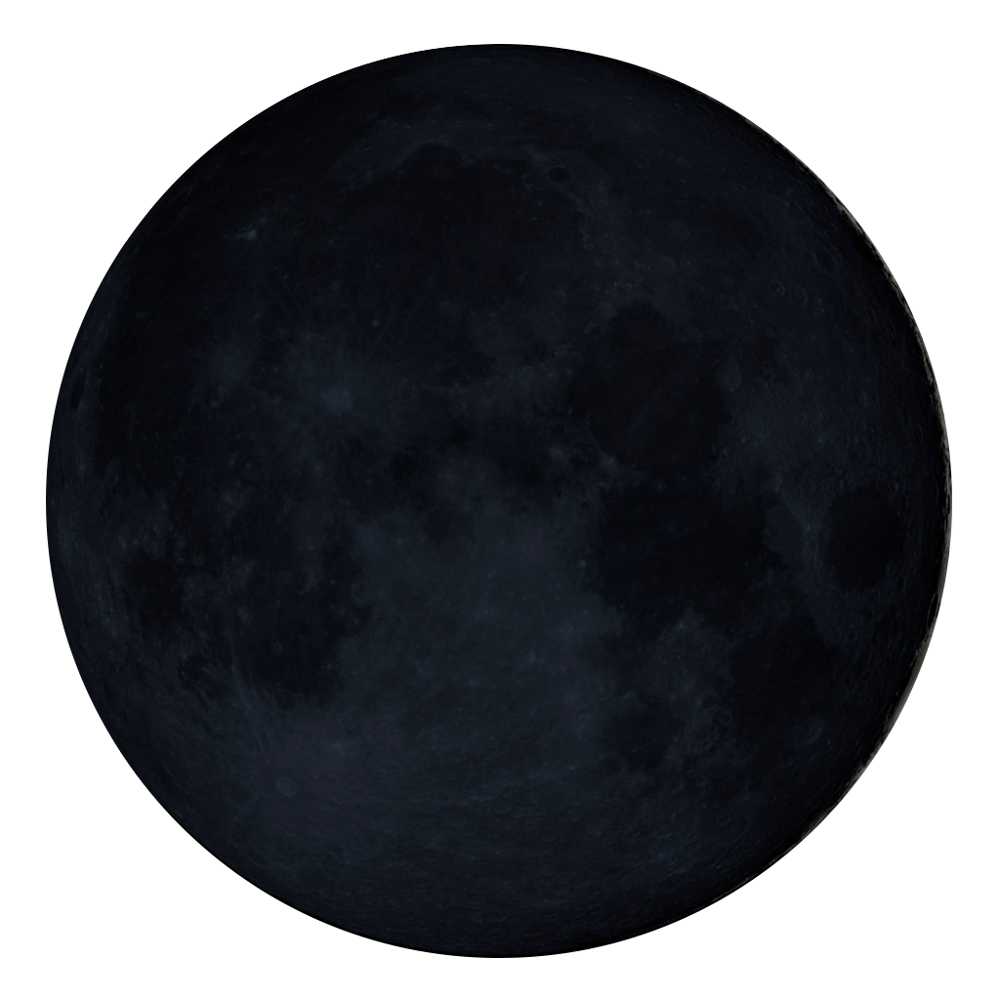
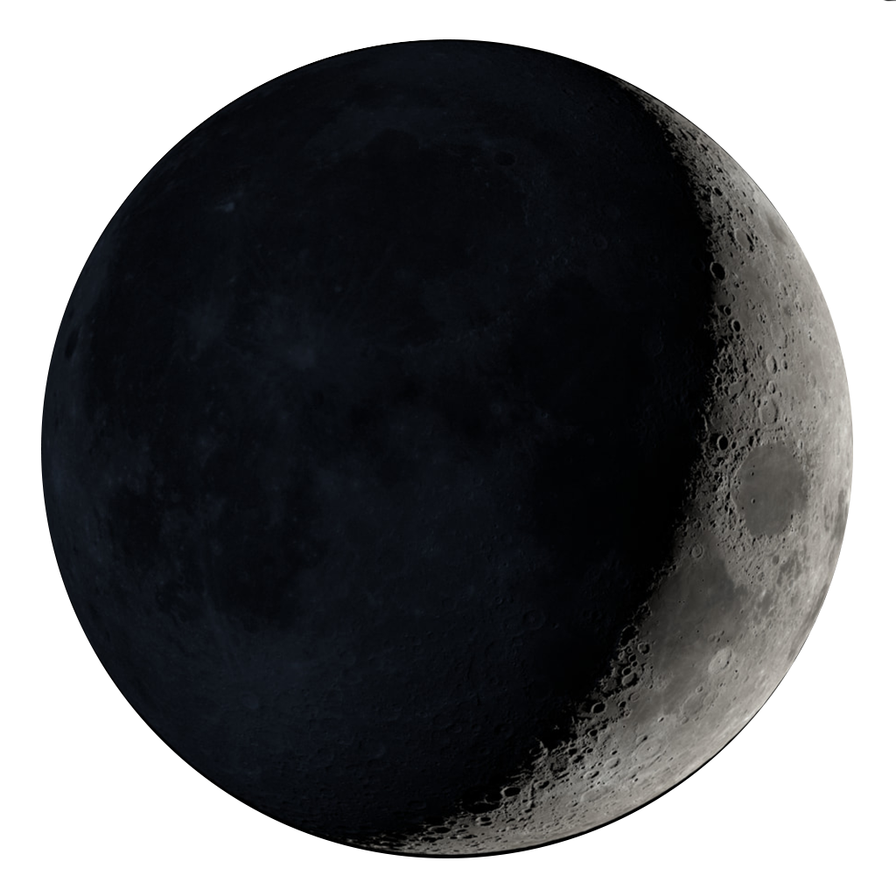
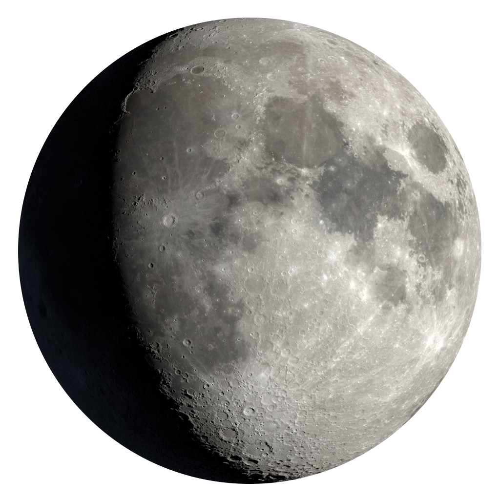
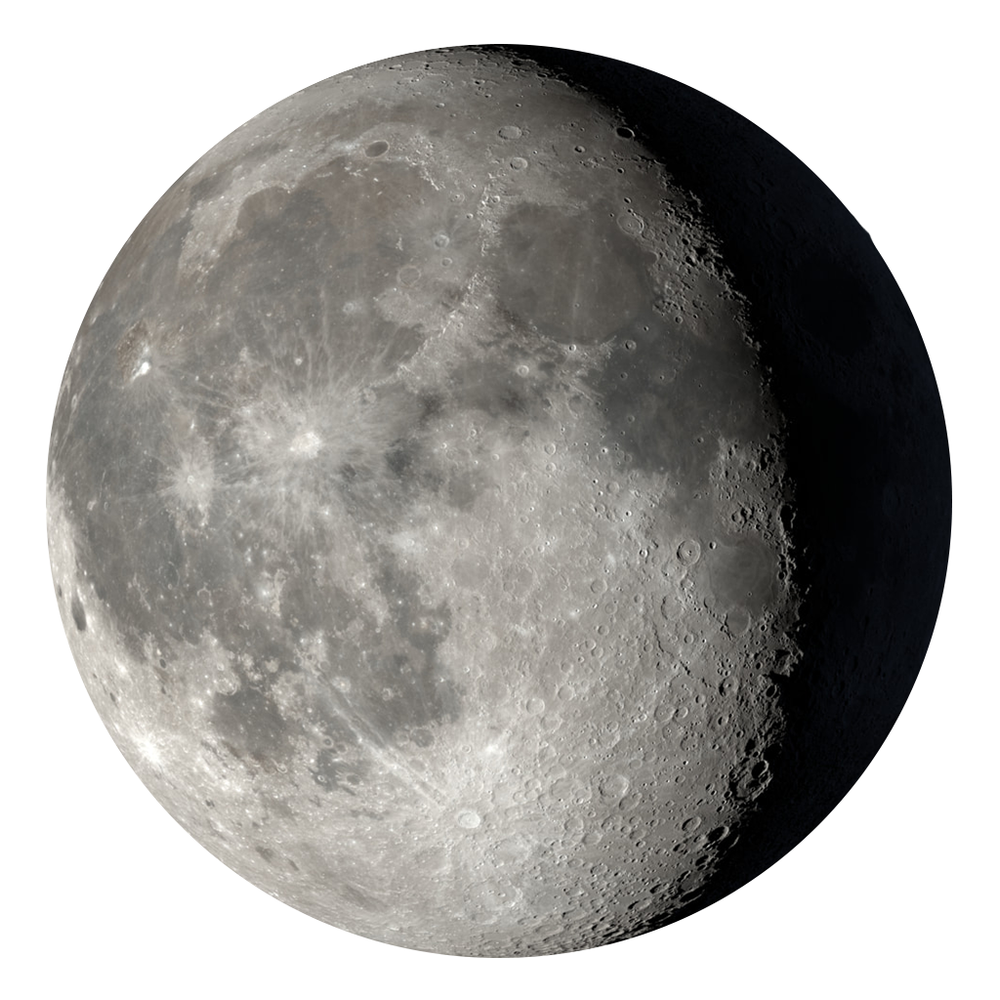
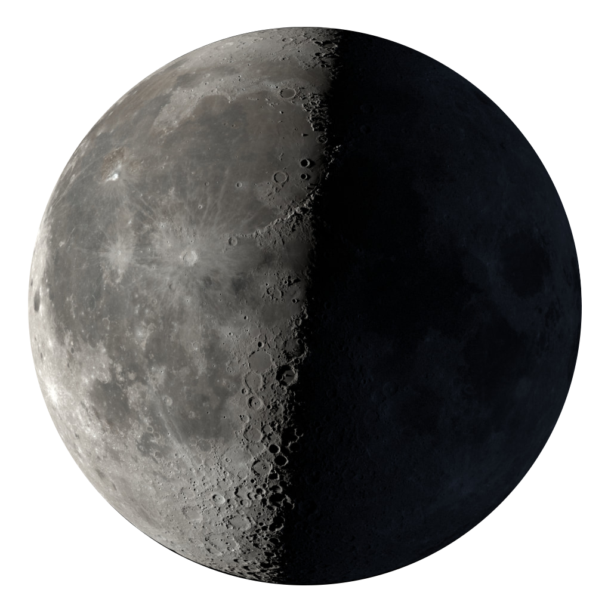
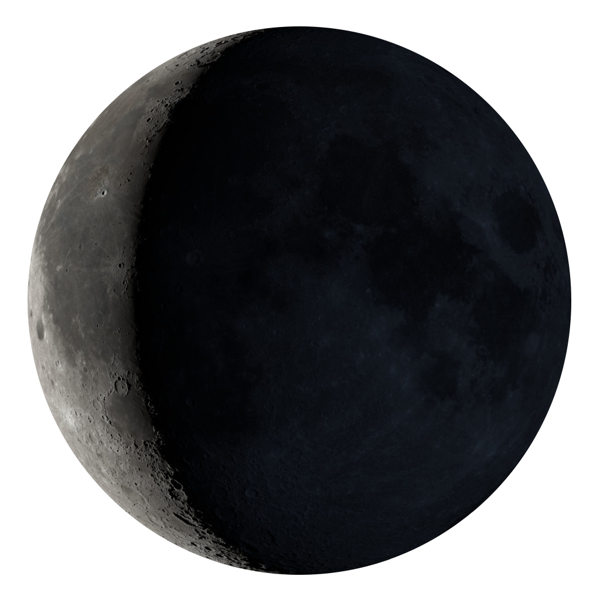

Лунные фазы
Фазы Луны — это постепенное изменение видимой освещённой части Луны, связанное с её положением относительно Земли и Солнца. Сама Луна не светится, а отражает солнечные лучи, но видимая часть освещённой поверхности меняется.
Смена фаз обусловлена орбитальным движением Луны вокруг Земли. Луна вращается по эллиптической орбите, и Солнце освещает разные стороны спутника по очереди.
Полный цикл от одного новолуния до следующего занимает примерно 29,5 дней (синодический месяц).
Описание фаз
Ежемесячно Луна проходит восемь фаз. Из них четыре — основные(новолуние, первая четверть, полнолуние и последняя четверть). Дополнительные фазы: растущий серп, растущая Луна, убывающий серп, убывающая Луна.
Узнать ближайшие даты фаз
Название |
Фото |
Описание |
|---|---|---|
| Новолуние |
 |
Луна находится между Землёй и Солнцем, её освещённая сторона не видна с Земли. Начало нового лунного цикла. |
| Растущий серп |
 |
Луна постепенно становится видимой, увеличивается освещённая часть справа (в северном полушарии). |
| Первая четверть |

|
Половина Луны освещена (правая половина в северном полушарии). В эту фазу Луна проходит четверть пути вокруг Земли, что случается ориентировочно через 7,4 дня после новолуния. |
| Растущая Луна |
 |
Освещённая часть Луны продолжает увеличиваться, приближаясь к полнолунию. |
| Полнолуние |

|
Через 14,8 дня после новолуния Луна находится чётко напротив Солнца. Луна полностью освещена и видна всю ночь. Земля находится между Солнцем и Луной. |
| Убывающая Луна |
 |
Освещённая часть Луны начинает уменьшаться, светлая часть слева (в северном полушарии). |
| Последняя четверть |
 |
Половина Луны освещена (левая половина в северном полушарии). Луна видна с вечера. |
| Убывающий серп |
 |
Освещённая часть продолжает уменьшаться, приближаясь к новолунию. |